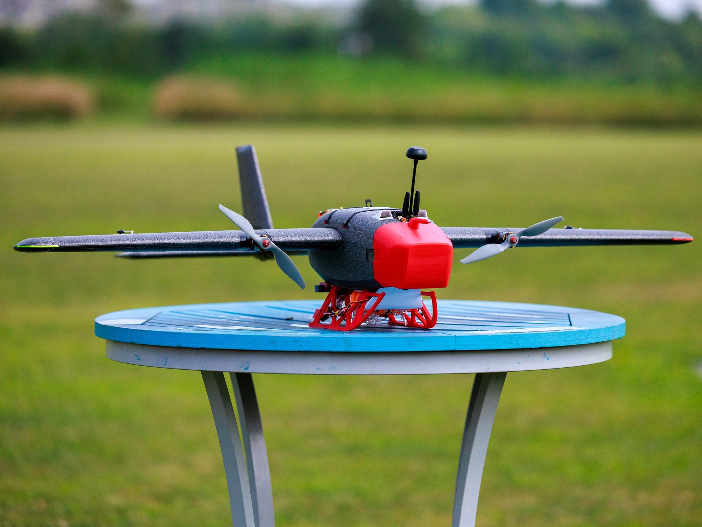
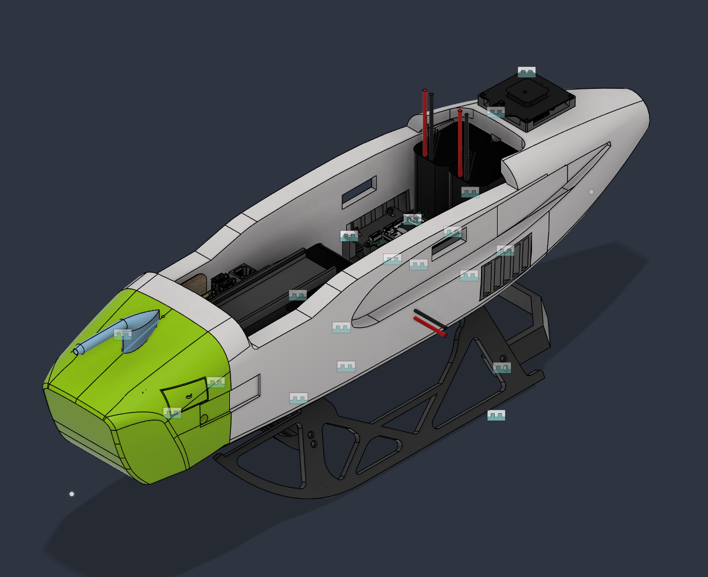
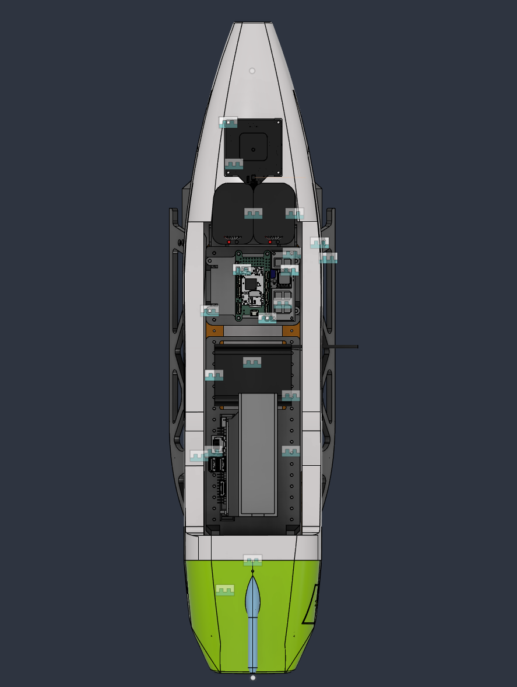
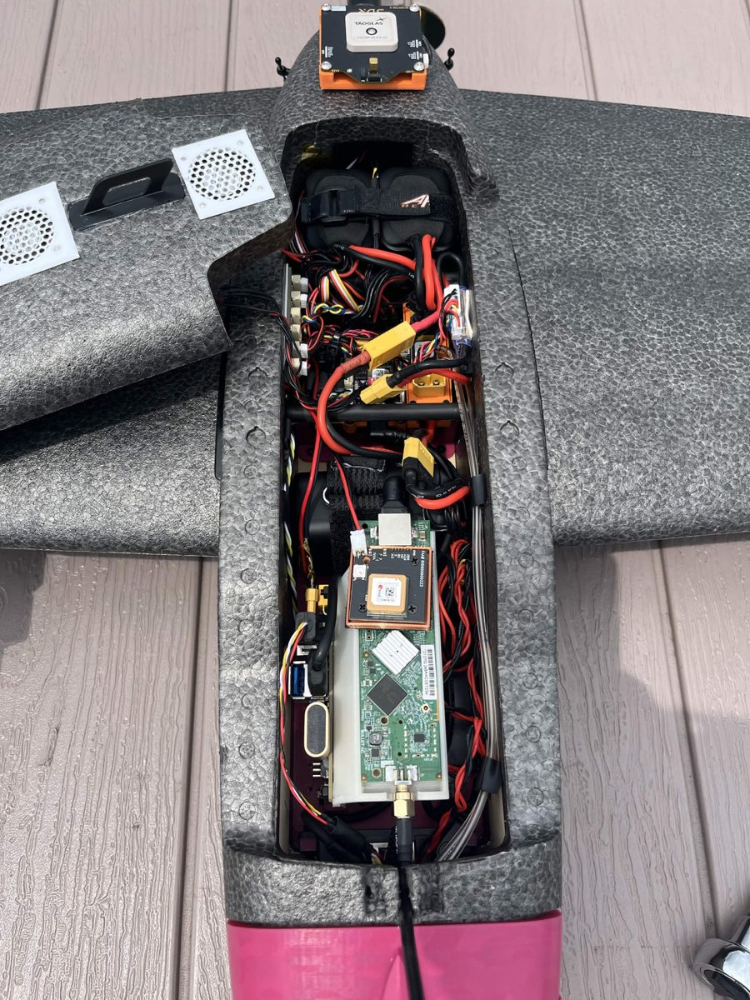
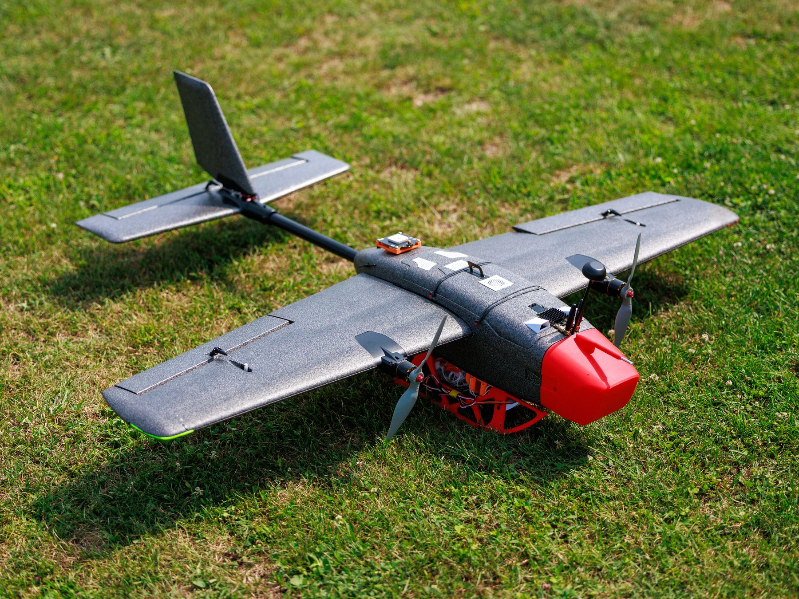
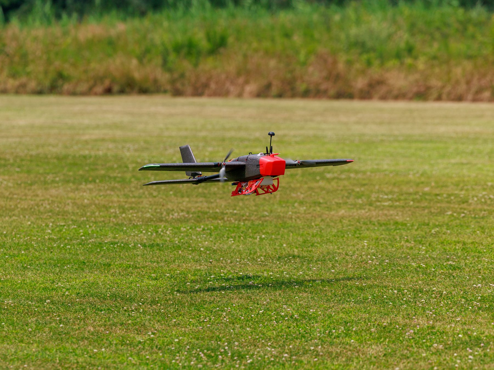
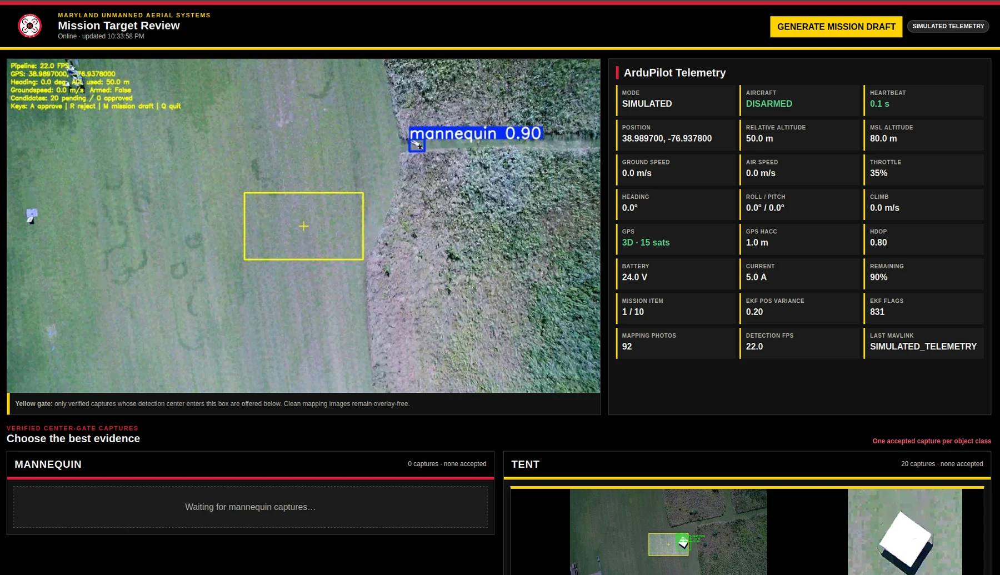

Autonomous Aircraft Development for RoboNation SUAS
I led technical development efforts for Maryland Unmanned Aerial Systems (MUAS), a student engineering team designing and developing autonomous aircraft for the RoboNation Student Unmanned Aerial Systems (SUAS) Competition.
My responsibilities included coordinating development across mechanical, electrical, and software subteams, contributing to airframe design and mechanical integration, and supporting payload integration, sensor selection, technical documentation, and flight testing.
On the software side, I trained the team's custom YOLO26 object-detection model to identify mission targets during autonomous search operations. I also developed a ground station GUI that integrates real-time object detection with live video monitoring, target location tracking, and operator review and confirmation to support mission execution.
Project details
My role
- Coordinated weekly technical progress across mechanical, electrical, and software efforts.
- Supported airframe configuration decisions and hardware integration planning.
- Helped translate competition requirements into aircraft subsystem priorities.
- Worked with team members on fit checks, assembly planning, testing readiness, and documentation.
- Designed the fuselage's internal mounting system, packaging all electronics, cooling fans, and the nose-mounted camera into the available space.
- Helped redesign the 3D-printed landing skids to better withstand landing loads.
- Trained the custom YOLO26 model that detects mission targets in the aircraft's live camera feed.
- Developed the ground station GUI combining real-time detection with live video, target location tracking, and operator review and confirmation.
Relevant skills
- Mechanical design and CAD-based iteration.
- Subsystem integration and packaging constraints.
- Test planning, documentation, and field-readiness preparation.
- Technical communication across multidisciplinary teams.
- Computer vision model training and ground-station software development.